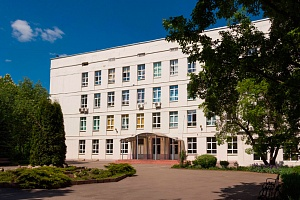
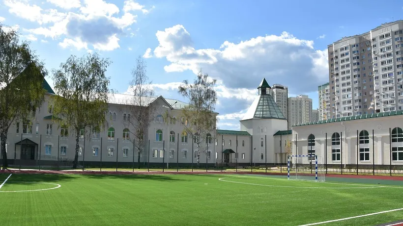
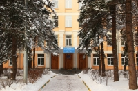

 Специализированный учебно-научный центр (факультет) — школа-интернат имени А.Н. Колмогорова Московского государственного университета имени М.В. Ломоносова (СУНЦ МГУ) реализует программы среднего общего образования с углубленным изучением математики, физики, химии, биологии, информатики. В школе организована работа кафедр профильных дисциплин и кафедры общеобразовательных предметов.
17 апреля Рейтинговое агентство RAEX опубликовало результаты пятого ежегодного исследования, посвященного поступлению школьников в лучшие вузы России. Специализированный учебно-научный центр имени А.Н. Колмогорова возглавил список лучших школ России по конкурентоспособности выпускников. Университетская гимназия МГУ заняла четвертую строчку рейтинга лучших средних общеобразовательных школ страны.
 «Физтех-лицей» имени П. Л. Капицы – школа нового типа, основной задачей которой является создание образовательной среды, максимально раскрывающей творческий потенциал каждого ученика, воспитание гармоничной личности, способной достойно ответить требованиям времени.
В основу воспитательно-образовательного процесса в «Физтех-лицее» положена стратегия ТТТ: традиции, таланты, технологии.
В 2021 году Физтех-лицей им. П. Л. Капицы вошел в топ-10 рейтинга 100 лучших школ по конкурентоспособности выпускников и занял четвертую строку рейтинга.
 Лицей называется Вторая школа, потому что он вырос из знаменитой московской физико-математической школы №2, которая открылась в 1956 году на улице Фотиевой как обычная общеобразовательная школа.
Физико-математическая специализация школы началась с того, что директором было организовано прохождение производственной практики учениками по специальности «радиомонтаж» (а позже — «программист») в Институте точной механики и вычислительной техники, директором которого был академик Лебедев (теперь это институт им. Лебедева).